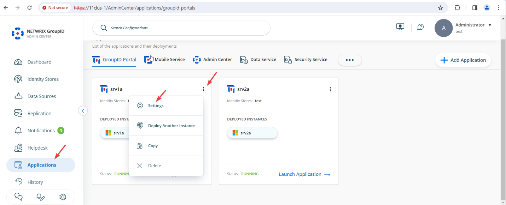
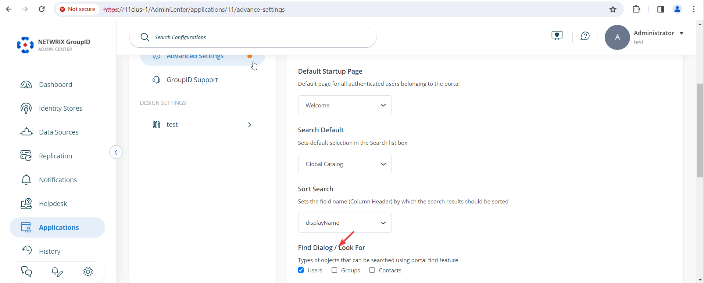
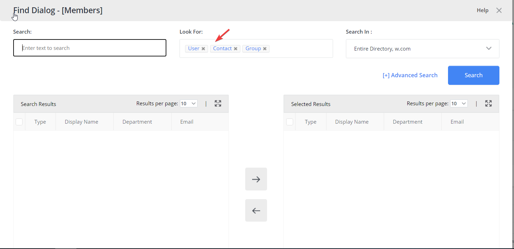
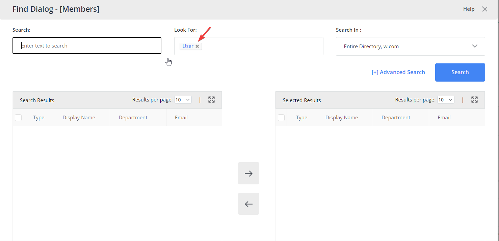

Applies To:
Directory Manager 11
Overview
By default, the Find dialog box in Directory Manager 11 portals allows users to search for all object types, including users, contacts, and groups. You can configure the portal settings to restrict the Find dialog box so that users can search only for user objects. This article explains how to update the settings to limit search results to user objects only.
Instructions
-
In Directory Manager Admin Center, go to Applications. For the
application or portal where you want to implement this setting, click the three dots
(...) and select Settings.
 -
On the next page, click Advanced Settings. Under the
Portal & Search tab on the right, find the option named
Find Dialogue / Look For. Uncheck Groups and
Contacts to limit searches to user objects only.
 - Scroll down and click the Save button to apply your changes.
Impact
Before making this change, the Find dialog box allows searches for
Users, Contacts, and Groups:

After updating the settings to allow only Users, the
Find dialog box will display only the User object type in
searches:
